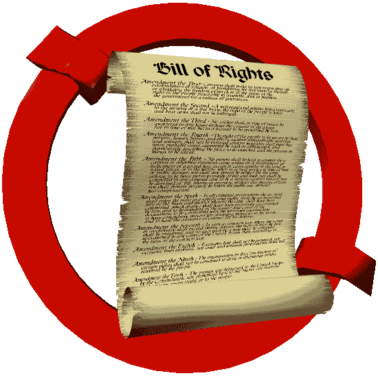

Original Text of the Bill of Rights
Welcome to the first
Bill of Rights Enforcement
site on the World Wide Web!
By its nature, the Bill of Rights is (and was always intended to
be) the highest law of the land, superseding every other regulation,
law, statue, ordinance, decree, or amendment presently (or ever) put
in force.
The Bill of Rights is "true for all men and all times" -- meaning that it's as valid and necessary today as when it was written.
While the body of the Constitution, as well as most subsequent amendments, function as a charter for strong central government that the Federalists insisted on, the price they willingly paid (the price demanded by Anti-Federalists) was not just a laundry list of things the government would generously allow people to do, but absolute prohibitions -- stringent limits -- imposed on what government would be allowed to do, written in plain language, meant to protect certain rights each of us possesses simply by virtue of being born a human being.
The Bill of Rights is our property, collectively and individually, not the government's. It may not be interpreted away, amended, or repealed, wholly or in part, without negating the entire Constitution from which government derives its authority. In short, if the heirs of the Federalists renege (as they have with increasing frequency and brutality) on any part of their bargain with us, the heirs of the Anti-Federalists, then the whole deal is off.
No Bill of Rights, no Constitution.
No Constitution, no government.
As the highest law of the land, the Bill of Rights must be enforced. Any official, appointed or elected at any level of government and guilty of any violation of an individual's rights under the first ten Amendments, must be arrested, tried, and punished. The highest -- the only -- priority of public officials must be to enforce the Bill of Rights, and that's the only criterion by which they should be judged. The same "Bill of Rights Enforcement" policy would shut down all government activity, and nullify all laws and regulations, not specifically authorized under the Ninth and Tenth Amendments to the Constitution.
Anyone who encounters (or professes to encounter) any difficulty understanding the meaning or intention of any portion of the Bill of Rights should ask himself the following question about America's Founders:
You've just fought the most powerful and ruthless government on the planet for thirteen long, miserable years and finally (more or less to your surprise) won your independence. The last thing in the world you want is to create another government just like the one you just defeated, or to fall again -- or let your children or grandchildren fall again -- under the boot-heel of tyranny.
Now: what do you want the Bill of Rights to mean?
Would you write a Second Amendment (for example) reserving the right to own and carry weapons to state governments and their militias -- rather than individuals?
If you agree with the foregoing points, why not make yours another Bill of Rights Enforcement site? The distinctive graphic of a parchment scroll -- representing the first ten amendments to the Constitution -- emerging from a broken Eurosocialist "verboten" sign, indicates you believe in and live by the principles expressed above.
L. Neil Smith, author
lneil@lneilsmith.org
The Probability Broach, Pallas, Henry Martyn, Bretta Martyn,
The American Zone (forthcoming), et al.
Click on the links below, and then save the logo for use on your own Bill of Rights Enforcement web page:
The big logo (shown at the top of this page), a .gif
file 550-pixels wide, 550-pixels high, 27,064-bytes big.

![[BOR Enforcement!]](tools/littlelogo.gif)
The little logo,
a .gif file 154-pixels wide, 154-pixels high, 2,746-bytes big.
The HTML should look like this:
<A HREF="http://www.lneilsmith.org/bore.html">
<IMG BORDER="0" WIDTH="154" HEIGHT="154" SRC="littlelogo.gif">
<BR>Bill of Rights Enforcement!</A>
Our new graphics were designed by Scott Bieser, proprietor
Liberty Artworx
"Professional graphics and personal opinions,
offered together and separately"
http://www.libertyartworx.com
This page has been accessed about
times since November 3, 2005
You are here: Webley Page > Bill of Rights Enforcement > First Bill of Rights Enforcement Site